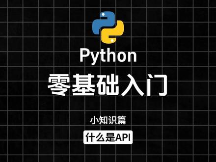

Build-your-own-X：通过从零造轮子真正掌握编程
来源：抖音 归档日期：2026-04-07 抓取状态：成功 原文字符：30164｜配图：31 张
摘要速览
看教程、刷题、背八股，学了很多但感觉什么都没真正掌握。根因是只在"使用"层面打转，没有深入到"实现"层面。
核心内容
- 核心理念：费曼的话——"What I cannot create, I do not understand"。从零实现一个技术，是理解它最有效的方式
- 项目是什么：GitHub 48 万星的开源资源合集（codecrafters-io/build-your-own-x），收录了 30+ 技术方向的 step-by-step 实现教程
- 覆盖方向举例：
- 底层：操作系统、数据库、编程语言、虚拟机、内存分配器
- 网络：Web 服务器、BitTorrent 客户端、网络栈
- 前端：React / Angular / Redux / 虚拟 DOM 从零实现
- AI：LLM from scratch、Diffusion Models、RAG
- 工具：Docker、Git、Shell、正则引擎、搜索引擎、文本编辑器
- 其他：区块链、3D 渲染器、游戏引擎、物理引擎
- 多语言支持：每个方向都有 C/C++/Python/Go/Rust/JavaScript 等多种语言版本，选自己熟悉的语言上手
- 适合修炼内功：不是教你用框架，是教你造框架。做完一个项目，对这个技术的理解会到达完全不同的层次
可执行启发
（待补充）
我的想法
（待补充——可以想想：1. 挑一个自己最想深入理解的方向，用 AI 辅助走一遍 build-your-own 流程，过程本身就可以做成系列内容 2. 这种"从零造轮子"的学习方法论，能否提炼成自己 03-学习/ 下的一个通用框架？）
为什么有用
对于想从"会用"进阶到"真懂"的程序员来说，这是最系统的修炼路径。你不需要自己找教程，这个项目已经按技术方向分门别类整理好了，每个都是 step-by-step 的实现指南。而且做完一个 build-your-own-X 项目，本身就是非常好的简历 / 技术博客素材。
适用 / 不适用场景
- 适用：想深入理解某个技术底层原理的程序员、准备技术面试想展示深度理解、想写技术博客但找不到有深度的选题
- 不适用：完全零基础的编程初学者（先学会基本语法再来）、只想快速出活不想深究原理的场景
原文沉淀
目录
- 7万
- 推荐视频
- 电脑C盘红了怎么办？看好啦！我只演示一遍 #程序员 #电脑 #C盘清理
- 6万程序员怼怼
- 6万零基础学办公
- 3万粤西焊匠
- 2万伯乐说技术
- 0万校长讲python（无小号）
- 4万里昂说AI
- 3万小嘉实验室
- 8万函数救心丸
- 开源项目分享第十二期 taste-skill
读屏标签已关闭


下载抖音精选
2026 © 抖音
[
京公网安备11010802050006号](https://beian.mps.gov.cn/)
[
电子营业执照](https://zzlz.gsxt.gov.cn/businessCheck/verifKey.do)
信息网络传播视听节目许可证 0126733
广播电视节目制作经营许可证 （京）字第11313号
增值电信业务经营许可证 京B2-20170846
网络文化经营许可证 京网文〔2025〕0181-061号
互联网宗教信息服务许可证 京（2025）0000017
药品医疗器械网络信息服务备案 （京）网药械信息备字（2023）第00570号
互联网新闻信息服务许可证 11220230001

违法和不良信息举报 400-140-2108 feedback@douyin.com
算法推荐专项举报 sfjubao@bytedance.com
体育饭圈专项举报 tyfq@bytedance.com
build-your-own-x
充钻石
壁纸
通知
**
消息
投稿
未登录
登录后即可观看喜欢、收藏作品
我的喜欢
我的收藏
观看历史
稍后再看
我的作品
我的预约
我的订单
暂停
00:38 / 00:48 直播
登录后可发布弹幕
发送
00:00
进入全屏H
网页全屏Y
0
截图
小窗模式U
字幕
- 不开启
稍后再看L
倍速
登录后即可切换倍速立即登录
高清 720P
标清 540P
智能
智能
清屏
清屏J
连播
自动连播K
7万
120
7万
2091
听抖音
**
重播

3s 后播放
什么是api 【Python从零开始学】#Python#编程#Python编程#零基础学Python#编程学习
3s 后播放下一个视频
3s 后循环播放当前视频
点击按住可拖动视频
程序员修炼内功的必经之路 Build-your-own-x!#GitHub #技术分享 #技能提升 #找工作 #程序员
7万
120
7万
2091
举报
发布时间：2026-01-14 19:31
小小写网页
粉丝1272获赞4.5万
推荐视频
- ［图：什么是api 【Python从零开始学】#Python#编程#Python编程#零基础学Python#编程学习］
03:35
播放中
什么是api 【Python从零开始学】#Python#编程#Python编程#零基础学Python#编程学习
491靠谱的乐一
- ［图：电脑C盘红了怎么办？看好啦！我只演示一遍 #程序员 #电脑 #C盘清理］
00:30
播放中
电脑C盘红了怎么办？看好啦！我只演示一遍 #程序员 #电脑 #C盘清理
6万程序员怼怼
- 
05:54
播放中
DSHarness 一切皆插件，为什么要这么做？ DeepSeek Harness 这次玩了个大的——一切皆插件：系统提示词、工具、甚至核心的 Agent loop，全都能换 我让他给了换了个超级赛人UI，结果……
1347费曼学徒冬瓜
- ［图：每天一个电脑小技巧，今天要学的是清理c盘内存 #一键解决电脑问题 #网络技术干货 #电脑技巧分享 #网络安全工具 #电脑问题解决指南］
00:24
播放中
每天一个电脑小技巧，今天要学的是清理c盘内存 #一键解决电脑问题 #网络技术干货 #电脑技巧分享 #网络安全工具 #电脑问题解决指南
2330黑客木
- 
00:42
播放中
前端狂喜！超过7000个UI组件直接免费开源！ (本项目为公开开源项目，纯技术知识讲解分享)#我在抖音聊科技 #ai新星计划 #前端 #程序员 #vibecoding
6174小嘉实验室
- ［图：Word 数字如何快速对齐编号，高手教你2秒搞定！#每天跟我涨知识 #word#excel #上热门］
00:15
播放中
Word 数字如何快速对齐编号，高手教你2秒搞定！#每天跟我涨知识 #word#excel #上热门
6万零基础学办公
- ［图：让你token不愁的开源项目 #抖音前沿科技首发计划 #ai #编程 #开源 #代码］
00:30
播放中
让你token不愁的开源项目 #抖音前沿科技首发计划 #ai #编程 #开源 #代码
2872暴走的泽林
- ［图：爆火的个人AI工作台实操教程，0基础轻松上手！#ai教程#ai工作台#ai工具#青年创作者扶持计划］
01:44
播放中
爆火的个人AI工作台实操教程，0基础轻松上手！#ai教程#ai工作台#ai工具#青年创作者扶持计划
8274Lab小新
- 
05:41
播放中
程序员+AI博主有啥痛点？用豆包做了对我超有效的四组技能 本期视频我从自己程序员+AI技术博主的身份出发，展示我做技术视频以及程序员日常工作时，创建以及整理出来的实用Skill。 其中包括用于绘制技术架构图的可视化Skill；能用来画出手绘风格流程图的excalidraw-diagram-skill； 创建了可生成科普动画的技术文案转动画Skill；针对脚本内容的专业审核Skill。 我用豆包Agent结合这几个Skill，解决了做技术视频会遇到的两大痛点。 #ai #vibecoding #up主 #程序员 #豆包Agent
1097神秘的鱼仔
- ［图：Python全套零基础入门教程，新手快看哦 #Python #Python编程 #Python爬虫 #Python入门 #Python学习］
11:03
播放中
Python全套零基础入门教程，新手快看哦 #Python #Python编程 #Python爬虫 #Python入门 #Python学习
483Python-小明学长(无小号
)
- ［图：异种管材拼接三招,卡槽,翻转下料,画线到位干活就省 #技术分享 #焊接干货 #电焊 #铆工 #焊接经验分享］
00:59
播放中
异种管材拼接三招,卡槽,翻转下料,画线到位干活就省 #技术分享 #焊接干货 #电焊 #铆工 #焊接经验分享
3万粤西焊匠
- ［图：DeepSeek Harness、WorkBuddy对比 DeepSeek Harness（DeepSeek 开源 Agent 框架）、腾讯 WorkBuddy，Hermes Agent（Nous Research 的自进化智能体），codex 对比］
13:21
播放中
DeepSeek Harness、WorkBuddy对比 DeepSeek Harness（DeepSeek 开源 Agent 框架）、腾讯 WorkBuddy，Hermes Agent（Nous Research 的自进化智能体），codex 对比
6168读书鉴世界
- ［图：40岁程序员三面HR面技术面试过了HR却说不合适？ #java #程序员 #架构师 #AI大模型 #大龄程序员］
06:57
播放中
40岁程序员三面HR面技术面试过了HR却说不合适？ #java #程序员 #架构师 #AI大模型 #大龄程序员
2万伯乐说技术
- 
02:51
播放中
DeepSeekV4Flash正式版接入codex识图写代码 手把手教你不需要codex++不需要ccswitch 接入codexDeepSeekV4Flash正式版发了支持原生api接入Codex再用GitHub开源项目补上识看图能力给DeepSeekV4Flash装上眼睛不用注册登录，全程保姆级实操零门槛。#codex #deepseek #deepseekv4 #ai新手入门教程 #ai新星计划
4508重阳2077
- ［图：Python入门学习:第一天print语法 #Python #Python编程 #Python基础 #Python学习 #Python入门］
02:58
播放中
Python入门学习:第一天print语法 #Python #Python编程 #Python基础 #Python学习 #Python入门
0万校长讲python（无小号）
- ［图：用 AI + Obsidian,搭个越来越懂你的"第二大脑" #ai新星计划 #抖音前沿科技首发计划 #青年创作者成长计划 #codex #obsidian］
03:38
播放中
用 AI + Obsidian,搭个越来越懂你的"第二大脑" #ai新星计划 #抖音前沿科技首发计划 #青年创作者成长计划 #codex #obsidian
4万里昂说AI
- 
00:38
播放中
开源项目分享第十二期 taste-skill(本项目为公开开源AI项目，纯技术知识讲解分享) #我在抖音聊科技 #ai新星计划 #agent #skill #codex
3万小嘉实验室
- 
06:52
播放中
Codex生成PPT，从能用到好用的实操技巧 #AI工具 #Codex #人工智能 #PPT制作#效率工具 AI 做 PPT，真正难的不是“生成”，而是如何让内容逻辑清晰、视觉风格统一，并且能够继续编辑和修改。 本期视频将用 Codex 完整演示从零生成专业 PPT 的工作流。
8802段截面
- ［图：Excel最强查找函数！Xlookup比Vlookup更好用 Xlookup vs VLOOKUP：Excel查找谁更牛？#excel教学 #xlookup函数 #vlookup函数 #办公技巧 #excel技巧 @DOU+上热门 @抖音小助手 @抖音创作灵感］
06:57
播放中
Excel最强查找函数！Xlookup比Vlookup更好用 Xlookup vs VLOOKUP：Excel查找谁更牛？#excel教学 #xlookup函数 #vlookup函数 #办公技巧 #excel技巧 @DOU+上热门 @抖音小助手 @抖音创作灵感
8万函数救心丸
- ［图：能看到这个视频，恭喜你已经站在了AI技术潮流的前沿! #AI #Agent #AI开发 #Agent开发 #计算机］
00:29
播放中
能看到这个视频，恭喜你已经站在了AI技术潮流的前沿! #AI #Agent #AI开发 #Agent开发 #计算机
4731学AI的小鬼(看简介）
全部评论
请先登录后发表评论
大家都在搜：build-your-own-x
MzRains
...
《自制一个操作系统》
8月前·湖北
380
分享
回复
封我的是傻子
...
这个如果能写完 1/5 能到什么水平
[图片: 绿帽子](https://p3-pc-sign.douyinpic.com/obj/tos-cn-i-tsj2vxp0zn/d23e058bab744349ac636c45e9a3687f?lk3s=343af0a2&x-expires=2105542800&x-signature=54BrDq3fpXOLQssEPpxLOgRxqWk%3D&from=876277922)
1月前·云南
1
分享
回复
.
...
不好意思github打不开
[图片: 杀马特](https://p3-pc-sign.douyinpic.com/obj/tos-cn-i-tsj2vxp0zn/ed5fb68598cf4741b3e7f2affd825650?lk3s=343af0a2&x-expires=2105542800&x-signature=8Vr7ZoYyP5obdxSPFRJPXIEeywM%3D&from=876277922)
End！
6月前·北京
44
分享
回复
两碗饭
...
有人有上github的方法嘛
6月前·江苏
4
分享
回复
淘好物旅游
...
成为技术专家后，发现这门技术落后了
[图片: 尬笑](https://p3-pc-sign.douyinpic.com/obj/tos-cn-i-tsj2vxp0zn/96744c9a302345d1b14d7e0a9951c7b9?lk3s=343af0a2&x-expires=2105542800&x-signature=WqCZ7W1bfaLjNH8AW1qS2a2zgZc%3D&from=876277922)
7月前·广东
500
分享
回复
@北沐雲
...
[图片: 杀马特](https://p3-pc-sign.douyinpic.com/obj/tos-cn-i-tsj2vxp0zn/ed5fb68598cf4741b3e7f2affd825650?lk3s=343af0a2&x-expires=2105542800&x-signature=8Vr7ZoYyP5obdxSPFRJPXIEeywM%3D&from=876277922)
[图片: 杀马特](https://p3-pc-sign.douyinpic.com/obj/tos-cn-i-tsj2vxp0zn/ed5fb68598cf4741b3e7f2affd825650?lk3s=343af0a2&x-expires=2105542800&x-signature=8Vr7ZoYyP5obdxSPFRJPXIEeywM%3D&from=876277922)
[图片: 杀马特](https://p3-pc-sign.douyinpic.com/obj/tos-cn-i-tsj2vxp0zn/ed5fb68598cf4741b3e7f2affd825650?lk3s=343af0a2&x-expires=2105542800&x-signature=8Vr7ZoYyP5obdxSPFRJPXIEeywM%3D&from=876277922)
我不造轮子
8月前·北京
4
分享
回复
好名字都让别人取了
...
为什么要造轮子，轮子别人造出来不就是让人用的吗
8月前·江苏
370
分享
回复
争与不争
...
尤忆当年轮子哥
8月前·河南
6
分享
回复
冬至-
...
很多难在第一步
[图片: 看](https://p3-pc-sign.douyinpic.com/obj/tos-cn-i-tsj2vxp0zn/87c2ae45679c4cc4a35bd7182fd76935?lk3s=343af0a2&x-expires=2105542800&x-signature=P5J0dz7Xn96YhPNykafCXbGoVEk%3D&from=876277922)
6月前·广西
6
分享
回复
登录后即可参与互动讨论
小小写网页
粉丝1272获赞4.5万
推荐视频
- ［图：什么是api 【Python从零开始学】#Python#编程#Python编程#零基础学Python#编程学习］
03:35
播放中
什么是api 【Python从零开始学】#Python#编程#Python编程#零基础学Python#编程学习
491靠谱的乐一
- ［图：电脑C盘红了怎么办？看好啦！我只演示一遍 #程序员 #电脑 #C盘清理］
00:30
播放中
电脑C盘红了怎么办？看好啦！我只演示一遍 #程序员 #电脑 #C盘清理
6万程序员怼怼
- 
05:54
播放中
DSHarness 一切皆插件，为什么要这么做？ DeepSeek Harness 这次玩了个大的——一切皆插件：
系统提示词、工具、甚至核心的 Agent loop，全都能换 我让他给了换了个超级赛人UI，结果……
1347费曼学徒冬瓜
- ［图：每天一个电脑小技巧，今天要学的是清理c盘内存 #一键解决电脑问题 #网络技术干货 #电脑技巧分享 #网络安全工具 #电脑问题解决指南］
00:24
播放中
每天一个电脑小技巧，今天要学的是清理c盘内存 #一键解决电脑问题 #网络技术干货 #电脑技巧分享 #网络安全工具 #电脑问题解决指南
2330黑客木
- 
00:42
播放中
前端狂喜！超过7000个UI组件直接免费开源！ (本项目为公开开源项目，纯技术知识讲解分享)
#我在抖音聊科技 #ai新星计划 #前端 #程序员 #vibecoding
6174小嘉实验室
- ［图：Word 数字如何快速对齐编号，高手教你2秒搞定！#每天跟我涨知识 #word#excel #上热门］
00:15
播放中
Word 数字如何快速对齐编号，高手教你2秒搞定！#每天跟我涨知识 #word#excel #上热门
6万零基础学办公
- ［图：让你token不愁的开源项目 #抖音前沿科技首发计划 #ai #编程 #开源 #代码］
00:30
播放中
让你token不愁的开源项目 #抖音前沿科技首发计划 #ai #编程 #开源 #代码
2872暴走的泽林
- ［图：爆火的个人AI工作台实操教程，0基础轻松上手！#ai教程#ai工作台#ai工具#青年创作者扶持计划］
01:44
播放中
爆火的个人AI工作台实操教程，0基础轻松上手！#ai教程#ai工作台#ai工具#青年创作者扶持计划
8274Lab小新
- 
05:41
播放中
程序员+AI博主有啥痛点？用豆包做了对我超有效的四组技能 本期视频我从自己程序员+AI技术博主的身份出发，展示我做技术视频以及程序员日常工作时，创建以及整理出来的实用Skill。
其中包括用于绘制技术架构图的可视化Skill； 能用来画出手绘风格流程图的excalidraw-diagram-skill； 创建了可生成科普动画的技术文案转动画Skill； 针对脚本内容的专业审核Skill。 我用豆包Agent结合这几个Skill，解决了做技术视频会遇到的两大痛点。 #ai #vibecoding #up主 #程序员 #豆包Agent
1097神秘的鱼仔
- ［图：Python全套零基础入门教程，新手快看哦 #Python #Python编程 #Python爬虫 #Python入门 #Python学习］
11:03
播放中
Python全套零基础入门教程，新手快看哦 #Python #Python编程 #Python爬虫 #Python入门 #Python学习
483Python-小明学长(无小号
)
- ［图：异种管材拼接三招,卡槽,翻转下料,画线到位干活就省 #技术分享 #焊接干货 #电焊 #铆工 #焊接经验分享］
00:59
播放中
异种管材拼接三招,卡槽,翻转下料,画线到位干活就省 #技术分享 #焊接干货 #电焊 #铆工 #焊接经验分享
3万粤西焊匠
- ［图：DeepSeek Harness、WorkBuddy对比 DeepSeek Harness（DeepSeek 开源 Agent 框架）、腾讯 WorkBuddy，Hermes Agent（Nous Research 的自进化智能体），codex 对比］
13:21
播放中
DeepSeek Harness、WorkBuddy对比 DeepSeek Harness（DeepSeek 开源 Agent 框架）、腾讯 WorkBuddy，Hermes Agent（Nous Research 的自进化智能体），codex 对比
6168读书鉴世界
- ［图：40岁程序员三面HR面技术面试过了HR却说不合适？ #java #程序员 #架构师 #AI大模型 #大龄程序员］
06:57
播放中
40岁程序员三面HR面技术面试过了HR却说不合适？ #java #程序员 #架构师 #AI大模型 #大龄程序员
2万伯乐说技术
- 
02:51
播放中
DeepSeekV4Flash正式版接入codex识图写代码 手把手教你不需要codex++不需要ccswitch 接入codex
DeepSeekV4Flash正式版发了支持原生api接入Codex 再用GitHub开源项目补上识看图能力给DeepSeekV4Flash装上眼睛 不用注册登录，全程保姆级实操零门槛。 #codex #deepseek #deepseekv4 #ai新手入门教程 #ai新星计划
4508重阳2077
- ［图：Python入门学习:第一天print语法 #Python #Python编程 #Python基础 #Python学习 #Python入门］
02:58
播放中
Python入门学习:第一天print语法 #Python #Python编程 #Python基础 #Python学习 #Python入门
0万校长讲python（无小号）
- ［图：用 AI + Obsidian,搭个越来越懂你的"第二大脑" #ai新星计划 #抖音前沿科技首发计划 #青年创作者成长计划 #codex #obsidian］
03:38
播放中
用 AI + Obsidian,搭个越来越懂你的"第二大脑" #ai新星计划 #抖音前沿科技首发计划 #青年创作者成长计划 #codex #obsidian
4万里昂说AI
- 
00:38
播放中
开源项目分享第十二期 taste-skill
(本项目为公开开源AI项目，纯技术知识讲解分享) #我在抖音聊科技 #ai新星计划 #agent #skill #codex
3万小嘉实验室
- 
06:52
播放中
Codex生成PPT，从能用到好用的实操技巧 #AI工具 #Codex #人工智能 #PPT制作#效率工具
AI 做 PPT，真正难的不是“生成”，而是如何让内容逻辑清晰、视觉风格统一，并且能够继续编辑和修改。 本期视频将用 Codex 完整演示从零生成专业 PPT 的工作流。
8802段截面
- ［图：Excel最强查找函数！Xlookup比Vlookup更好用 Xlookup vs VLOOKUP：Excel查找谁更牛？#excel教学 #xlookup函数 #vlookup函数 #办公技巧 #excel技巧 @DOU+上热门 @抖音小助手 @抖音创作灵感］
06:57
播放中
Excel最强查找函数！Xlookup比Vlookup更好用 Xlookup vs VLOOKUP：Excel查找谁更牛？#excel教学 #xlookup函数 #vlookup函数 #办公技巧 #excel技巧 @DOU+上热门 @抖音小助手 @抖音创作灵感
8万函数救心丸
- ［图：能看到这个视频，恭喜你已经站在了AI技术潮流的前沿! #AI #Agent #AI开发 #Agent开发 #计算机］
00:29
播放中
能看到这个视频，恭喜你已经站在了AI技术潮流的前沿! #AI #Agent #AI开发 #Agent开发 #计算机
4731学AI的小鬼(看简介）
｜ 违法和不良信息举报：400-140-2108 feedback@douyin.com ｜ 算法推荐专项举报：sfjubao@bytedance.com | 体育饭圈专项举报：tyfq@bytedance.com
｜ 信息网络传播视听节目许可证 0126733
｜ 广播电视节目制作经营许可证 （京）字第11313号
｜ 增值电信业务经营许可证 京B2-20170846
｜ 网络文化经营许可证 京网文〔2025〕0181-061号 ｜
｜ 互联网宗教信息服务许可证 京（2025）0000017 ｜
热门：游戏攻略游戏解说图文设计优志愿视频教程，视频下方链接直接拍，包邮 #优志愿 #优志愿卡购买 #高考志愿填报指南 #高考志愿填报 #2027高考感觉是自己能考上清华了山西558分能上什么大学新课标二卷物理黑龙江A股收评：沪指涨0.92%站上4100点毛屋大峡谷&乡城县风光 #川西风光 #乡城县 #毛屋大峡谷 #小众景点 #航拍RVC变声器重大更新，新功能演示及升级方法 有问题可在评论区提问，需要远程请点击头像。#RVC #变声器 #RVC变声器 #升级教程#生活小妙招 #西瓜果切 #西瓜的正确打开方式公式化彩六：你要是问我，海岸线最战术的干员是谁 @猫猫雨训练营（招陪） #汤姆克兰西的六个彩虹被围着打 #彩六 #R6 #彩6#STEAM游戏考研453分｜26考研【五月规划】进度安排+经验分享！！ 保姆级学习方法讲解！ #26考研 #上岸吧 #考研 #干货分享 #考研复习攻略蝙蝠捏捏乐里有“红色鱼骨”？在午夜打开它，还会变身巨型鱼骨怪 #潮玩 #分享爱用物 #捏捏乐 #寻宝
进入全屏
直播加载中
- 创作者中心
归属：[[02-输入/按主题/认知与思维/_index|认知与思维]]